Resumé
Education University of Michigan, School of Information - Ann Arbor, MI Bachelor of Science in Information, Concentration in User Experience Design Minor in Creative Writing, Poetry Expected Graduation: April 2021 GPA: 3.29/4.0 Relevant Coursework:
Data-Oriented Programming, Statistics and Data Analysis, Programming and Introductory Data Structures, Discrete Math Experience University of Michigan, Ann Arbor, MI Research Assistant September 2017 – Present Assisted in web development of
tailored mobile site for self-management of HIV/AIDS for adolescents in Uganda Conducted pilot tests of mobile site with users from target demographics in Kampala, Uganda Coded and designed front end of the mobile site using CSS/HTML/Javascript/Bootstrap
Developed content for mobile site through qualitative analysis of interviews Analyzed data for 80+ countries about questions pertaining to sexual abuse Maintained database using MySQL and Flask through Amazon Web Services
 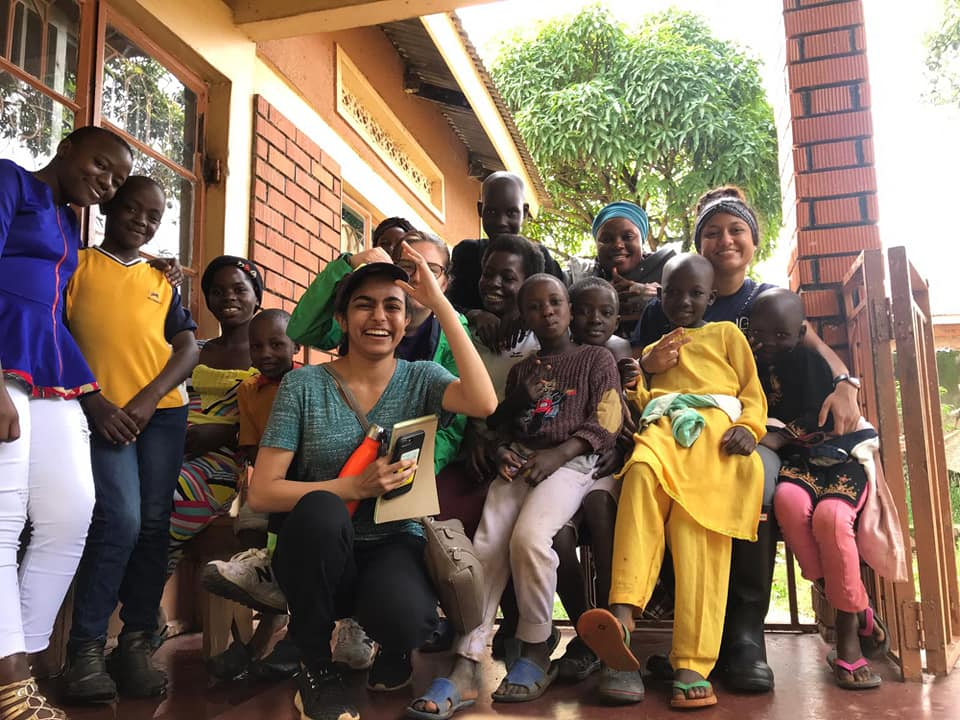
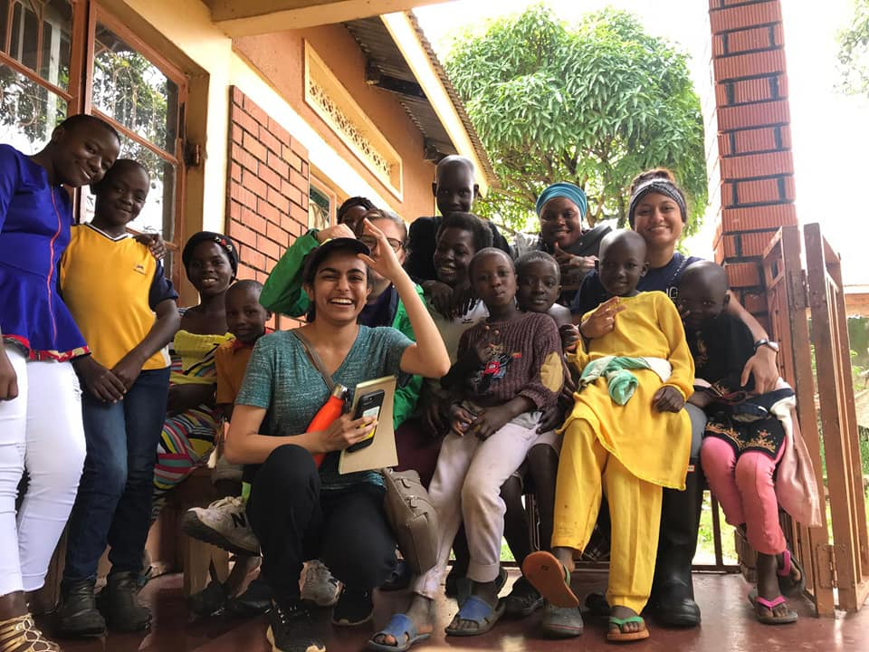 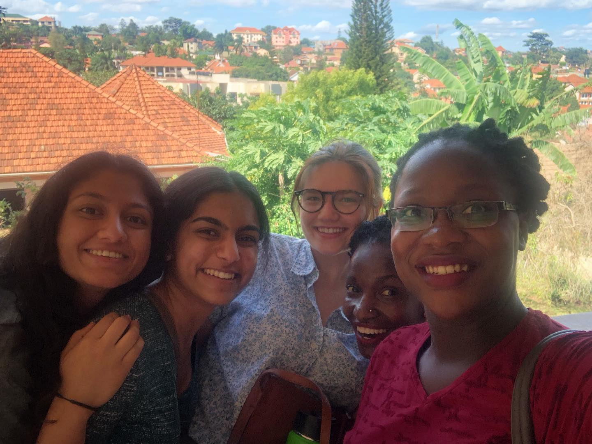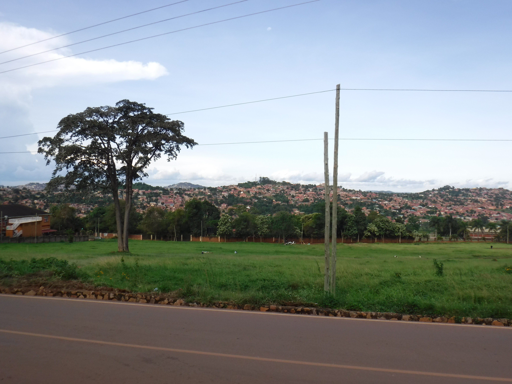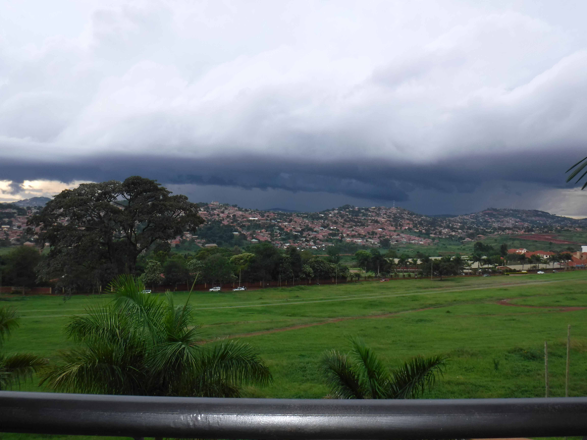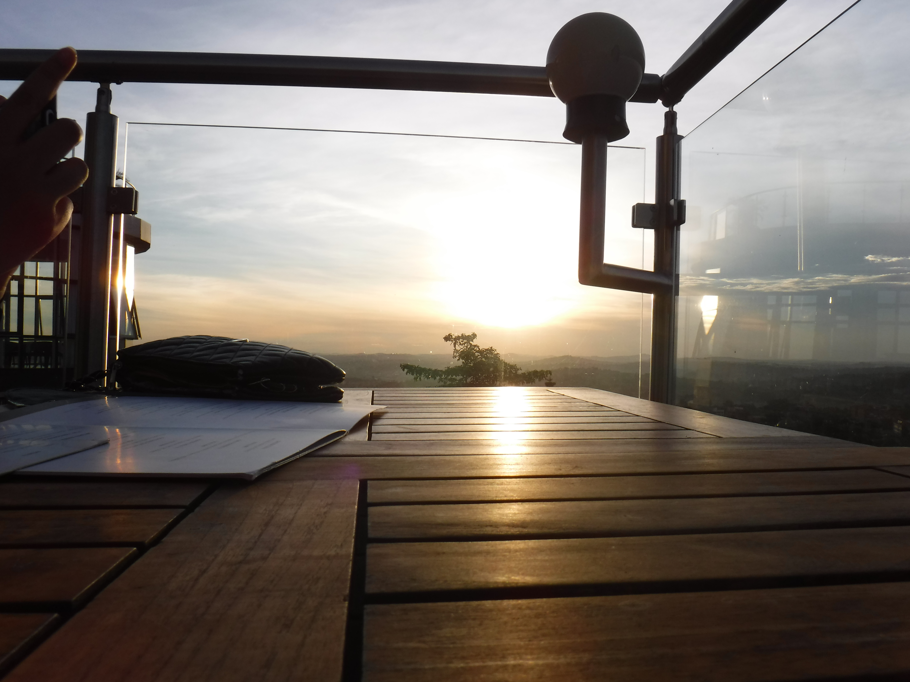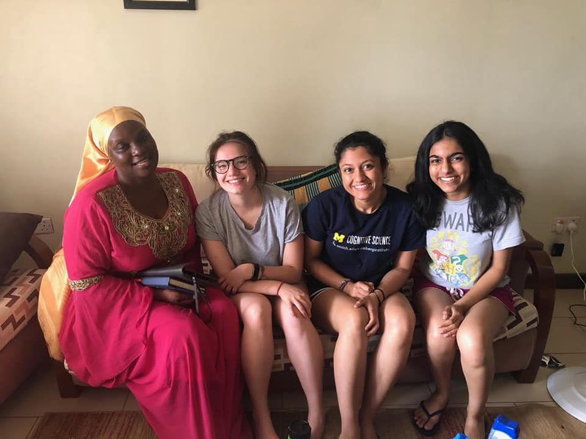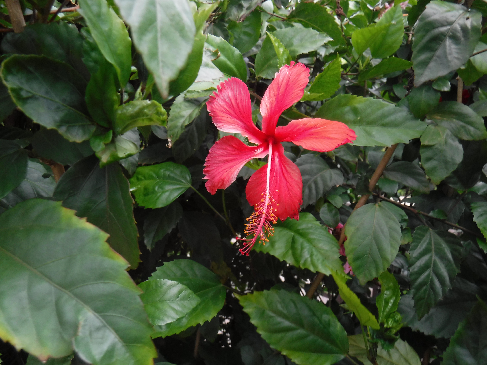
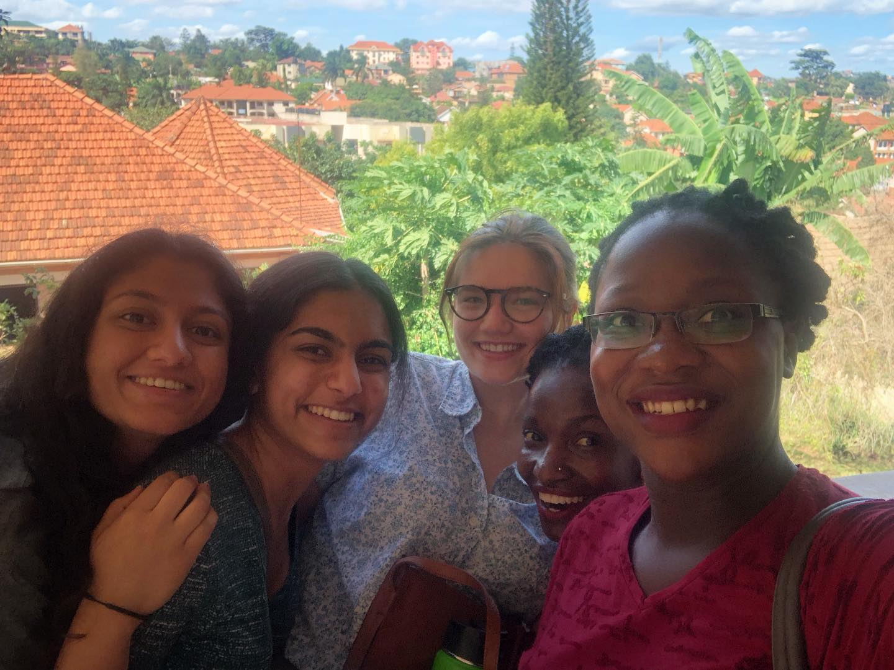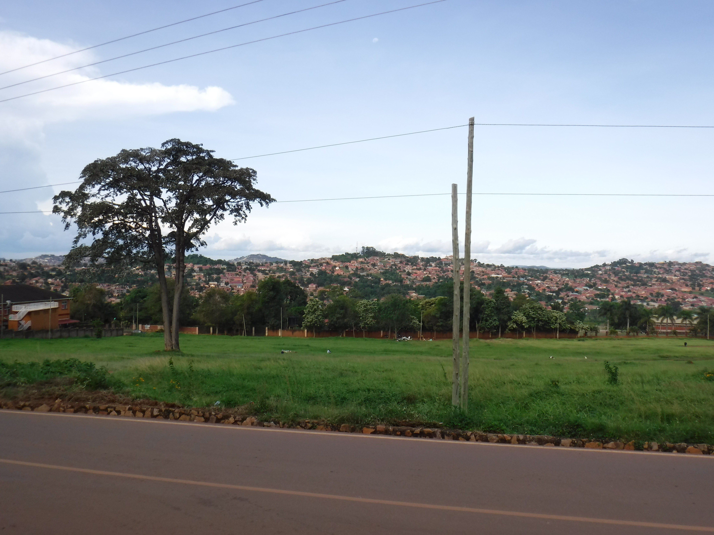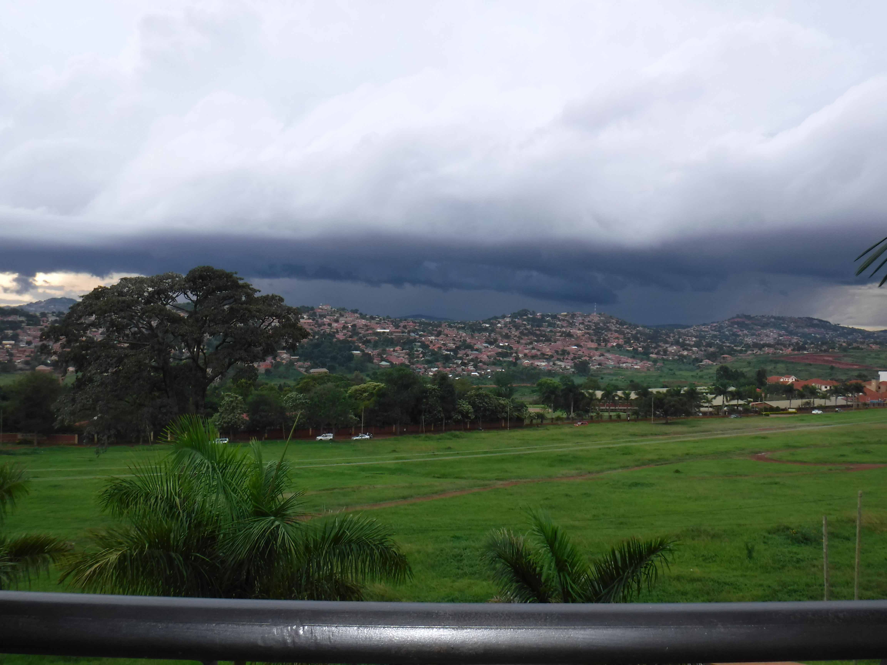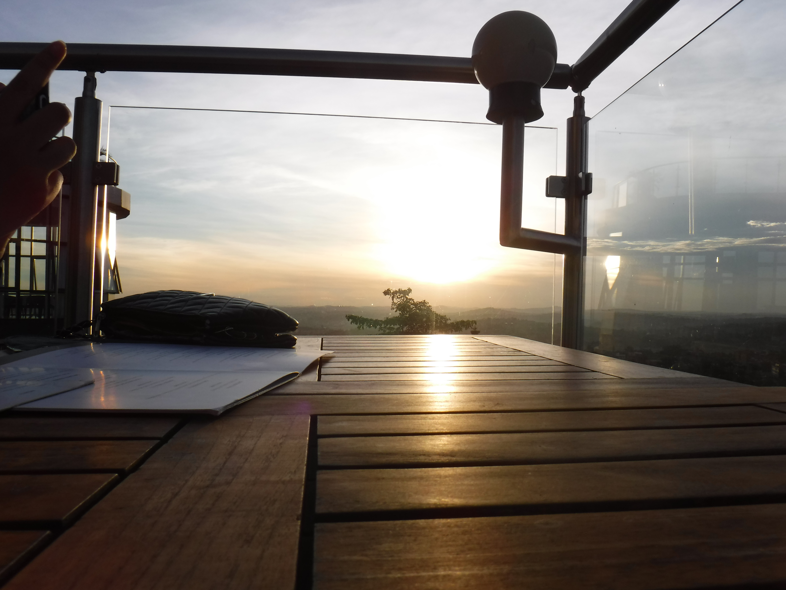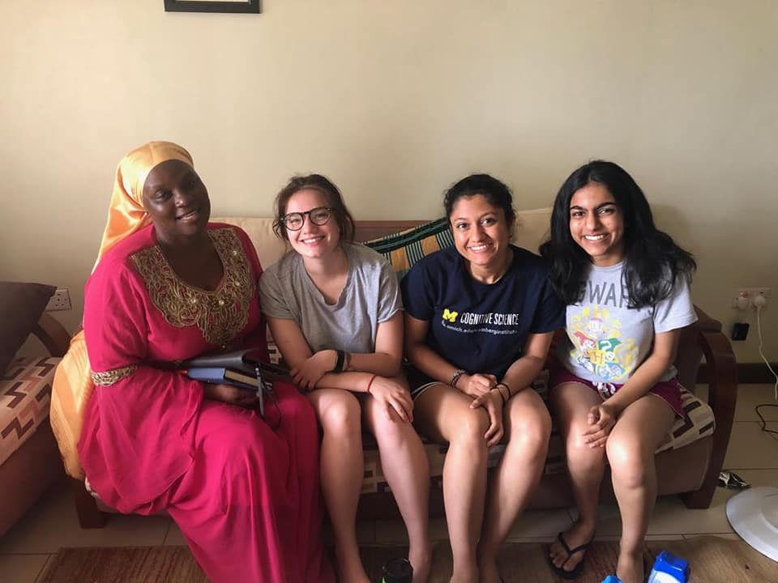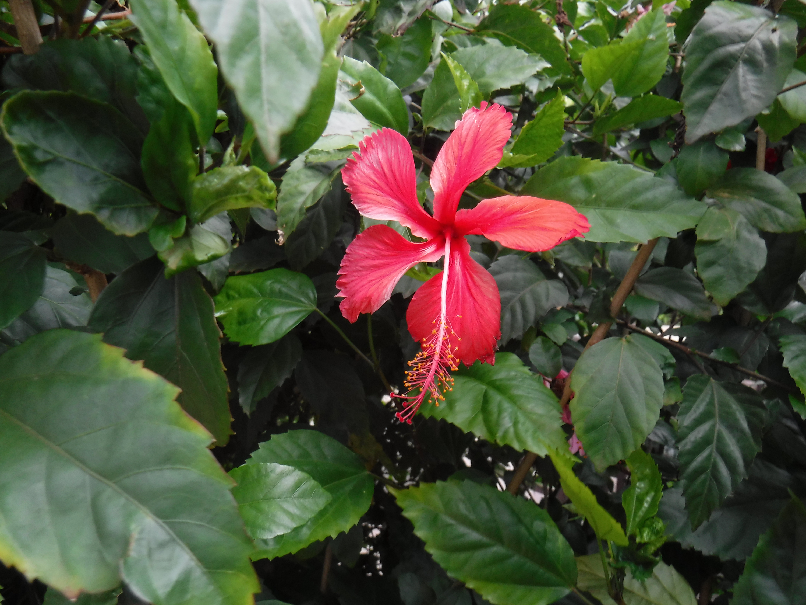
Verint Systems, Ann Arbor, MI Client Support Intern July 2019 - December 2019 Provided technical product/service information for the Foresee Customer Experience model Assessed client IT knowledge levels and tailor responses appropriately Resolved emerging
problems that clients face with accuracy and efficiency Utilized Toad, Eclipse, and SQL to assess client code packages Michigan Research Community, Ann Arbor, MI Member September 2017 - April 2018 Residential Affiliate of the Undergraduate
Research Opportunity Program (UROP) Presented research poster at annual symposium Participated in monthly research seminars with various distinguished University of Michigan faculty Activities What the F Magazine Events Lead Coordinator September
2019 – Present Events Coordinator September 2017 – April 2019 Organized socially-conscious discussions and launch events for an intersectional feminist art and literary magazine Planned logistics of campus-wide magazine distribution Blog:
https://whatthefmagazine.wordpress.com/ Cafe Shapiro Undergraduate Student Writer December 2018– April 2019 Nominated by Creative Writing teacher for
outstanding classwork Published three poems in 22nd annual anthology Participated in live poetry reading for study breaks put on by Shapiro Undergraduate Library Skills Proficient in C++, C, Python, CSS, HTML, Microsoft Office Suites (Excel,
Word, PowerPoint, Visual Studio) Experienced with Adobe Photoshop, Adobe InDesign, iMovie, MySQL, Flask, Eclipse, Toad Leadership, Writing, Research, Communication, Data Analysis, Public Speaking